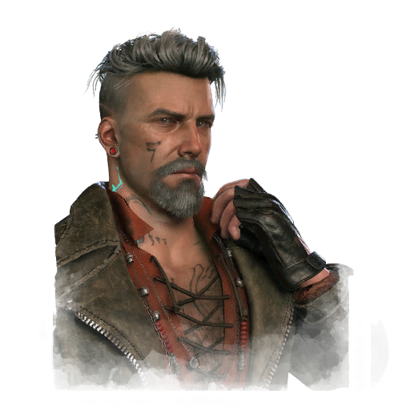

维多利奥·托斯卡诺 Vittorio Toscano
- 性别
- Man
- 出身
- 意大利人
- 演员
- Luc de Villars (The Monster Factory)
背景故事
1343年，维托里奥·托斯卡诺出生于阿尔贝托与卡泰丽娜·托斯卡诺膝下，是三兄弟中最年幼的一位，在家族土地的继承顺位上排第三。十五岁时，父亲将他送去跟随埃托雷·法布里齐奥习武——正是这位骑士，曾将他的两位哥哥培养成才。然而维托里奥并不像兄长们那样热衷于战斗训练。作为一名哲学信徒，他坚信肢体暴力乃无能者最后的避难所。法布里齐奥被维托里奥的和平主义所激怒，命自己的一名侍从袭击他。维托里奥闪避、格挡，却拒绝还手。当盛怒的对手猛扑而来时，维托里奥只是招架。袭击者脚下一绊，整个人扑倒在自己的匕首上。不到一分钟，他便失血而死。维托里奥扔下手中的剑，发誓此后再不拾起。既然维托里奥在治学方面显露出天赋，他那徒劳无功的父亲便改送他去叔叔伦佐处求学。伦佐不仅是波斯库罗公爵，同时也是一位学者与珍奇古物的收藏家。在伦佐的教导下，维托里奥将研究专注於失落文明与古代历史。他研读被遗忘的典籍，成为古代秘密社团之哲学与智慧、以及那些隐匿的守护知识者们方面的专家。这些守护者几乎存在于每一个世纪、每一种文化之中；他们因时代与地域不同而拥有各异的名字，并据说来自另一个维度——一个完美的世界。他收集了所有关于守望者、守秘者、引路者、宗师的文献，
专属技能
通用技能 任意逃生者均可使用
寻宝专家
Artefact Hunter
执念之缚
Bound by Obsession
黑暗感知
Dark Sense
坚持到底
Down to the Last
似曾相识
Déjà Vu
希望
Hope
同族
Kindred
最后站立
Last Standing
轻装上阵
Lightweight
不抛弃任何人
No One Left Behind
过度自信
Overconfidence
掠夺者直觉
Plunderer's Instinct
预兆
Premonition
韧性
Resilience
滑溜之躯
Slippery Meat
小猎手
Small Game
背脊发凉
Spine Chill
这不是真的
This Is Not Happening
硬跑者
Tough Runner
我们能行
We'll Make It
求生意志
Will to Live
附加品
- 暂无数据。